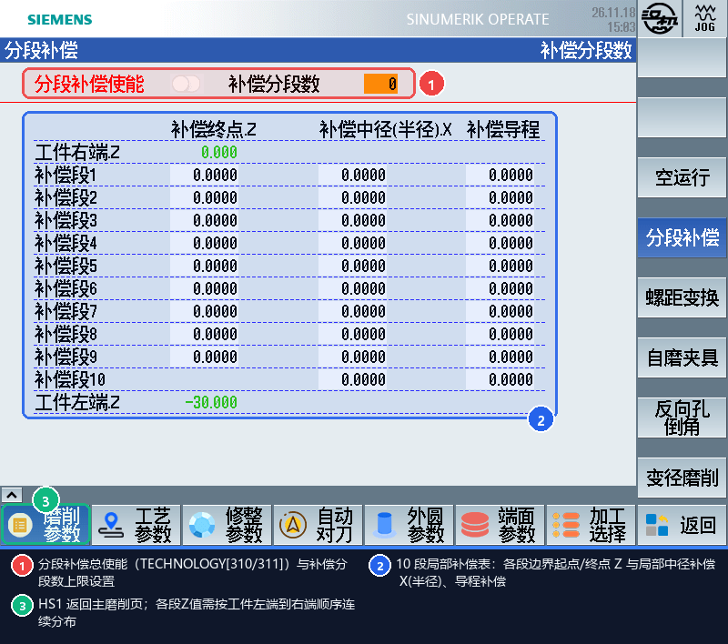
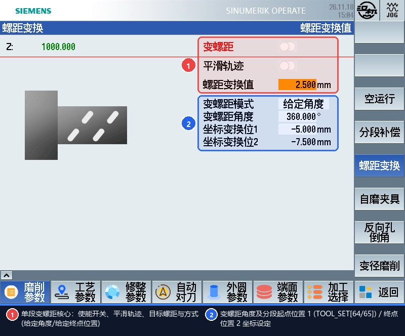
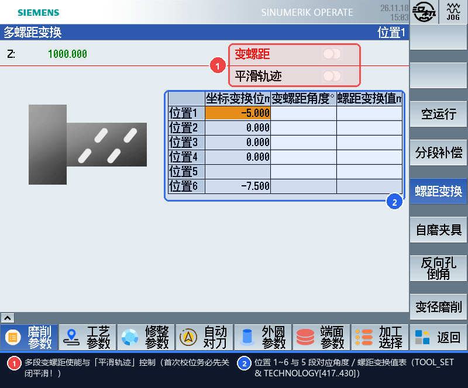

6.5 高级模块（下）：分段补偿与单/多段螺距变换
对于精密滚珠丝杠或长螺母存在的局部中径胀缩/螺距非线性漂移，以及双螺母预紧变导程/非等距过渡槽零件，可在 内/外螺纹磨削参数界面（a_grind.com Mask1 / Mask18）通过右侧垂直软键 VS4 分段补偿 与 VS5 螺距变换 启用本节两大高精度插补补偿模块。
索引换算提醒：下表所列
NC 变量均为.SPF与MGUD.DEF使用的 0-based 下标；对应的HMI 脚本（a_grind.comEasyScreen）统一采用 1-based 下标（HMI = NC + 1），文中均已并列给出完整变量名，方便跨文件查证。
1. 10 段中径与导程分段补偿（Mask57 / VS4）

在 机床配置 → 第五类扩展界面 中打开 分段补偿界面开启（NC：TECHNOLOGY[309]=1 / HMI：TECHNOLOGY[310]）后，即可由 VS4 分段补偿 进入 Mask57。系统允许将工件有效螺纹全长最多划分为 10 个连续区间，在 Z-C 螺旋插补过程中动态平滑叠加各段的半径中径修正与导程修正。
| 界面字段 | NC 变量（0-based） | HMI 引用（1-based） | 参数含义与填写规范 |
|---|---|---|---|
| 分段补偿使能 | TECHNOLOGY[310] |
TECHNOLOGY[311] |
0 关闭 / 1 开启（仅设为 1 时螺旋插补主循环读取下表补偿量） |
| 补偿分段数 | TECHNOLOGY[311] |
TECHNOLOGY[312] |
范围 0 ~ 10（设 N 段时需依次填入前 N-1 个分界 Z 坐标及 N 组 X/Z 补偿量） |
| 工件左端.Z / 右端.Z | INI[1] / INI[2] |
INI[2] / INI[3] |
界面左侧绿色只读回显当前主磨削界面的左右端 Z 坐标边界，用于核对分段点是否落在工件有效范围之内 |
| 第 1～9 段补偿点 Z | TECHNOLOGY[332..340] |
TECHNOLOGY[333..341] |
第 1 段与第 2 段……直到第 N-1 与第 N 段的 Z 向分界点绝对坐标，须沿工件磨削方向保持严格单调排序 |
| 第 1～10 段补偿中径.X（半径） | TECHNOLOGY[312..321] |
TECHNOLOGY[313..322] |
各段在 X 轴半径方向 上的微调量（mm；注意区分主画面直径方向“中径调整”） |
| 第 1～10 段补偿螺距.Z | TECHNOLOGY[322..331] |
TECHNOLOGY[323..332] |
各段对应的导程/螺距轴向补偿量（mm） |
现场调试流程建议
- 采集检测曲线：试磨一件成品并送三坐标或激光导程仪检测，按轴向长度提取中径误差曲线与螺距累计误差曲线；
- 划分合理分段：按热变形或受力变形趋势划出
N段（如3～6段即可覆盖常见热漂移规律），对照左侧绿色回显的INI[1]/INI[2]确认各分界Z坐标TECHNOLOGY[332..340]严格落在两端区间内； - 小步保守试补：先填较小保守值（特别注意
TECHNOLOGY[312..321]为 半径量），复磨实测后再逐步精调至全长公差带中央。
2. 单段螺距变换（Mask50 / VS5）

当 机床配置 → 第五类扩展界面 将 螺距变换界面（NC：TOOL_SET[61] / HMI：TOOL_SET[62]）设为 1（单段） 时，点击 VS5 螺距变换 进入 Mask50。该模式常用于预紧双螺母中间跨越段或单一局部区间的导程突变（变节距几何与轨迹平滑示意图参见 6.4 节第 4 部分）：
| 界面字段 | NC 变量（0-based） | HMI 引用（1-based） | 参数含义与设定规则 |
|---|---|---|---|
| 变螺距（总使能） | TOOL_SET[59] |
TOOL_SET[60] |
0 关闭 / 1 开启单段螺距变换 |
| 平滑轨迹 | TECHNOLOGY[301] |
TECHNOLOGY[302] |
0 否 / 1 是（开启后加减速拐角采用圆滑过渡曲线；首次对刀核对起止位置时务必设为 0 否，确认位置准确后再改回 1） |
| 螺距变换值 | TOOL_SET[66] |
TOOL_SET[67] |
范围 0 ~ 100 mm：变换区间内执行的目标中间段螺距值 |
| 变螺距模式 | TOOL_SET[60] |
TOOL_SET[61] |
0 给定角度：从 坐标变换位 1 起按给定旋转角跨度 TOOL_SET[67] 执行变螺距，并自动计算回显 坐标变换位 2；1 给定终点位置：直接指定 坐标变换位 1 与 坐标变换位 2，由系统自动换算中间过渡角度 |
| 变螺距角度 | TOOL_SET[67] |
TOOL_SET[68] |
位置 1 到位置 2 之间的 C 轴相对旋转角（°；模式下设为 0 时开放输入） |
| 坐标变换位 1 / 位 2 | TOOL_SET[64] / TOOL_SET[65] |
TOOL_SET[65] / TOOL_SET[66] |
变螺距区间的起始 Z 坐标与终止 Z 坐标（模式=0 时位置 2 为只读自动计算值） |
对位关键提示：在初次试加工或空跑校验
位置 1与位置 2是否与零件空刀槽/预紧错位槽对齐时，请务必暂时关闭平滑轨迹（TECHNOLOGY[301]=0），避免平滑提前或延后插补掩盖真实变换起止点位置！
3. 多段（5 区间）螺距变换（Mask58 / VS5）

当 机床配置 → 第五类扩展界面 将 螺距变换界面（NC：TOOL_SET[61] / HMI：TOOL_SET[62]）设为 2（多段） 时，点击 VS5 螺距变换 切入 Mask58。相比单段模式，Mask58 将单组起止点扩展为 位置 1 ～ 位置 6 共 6 个 Z 向节点，支持连续划分最多 5 段独立变螺距区间：
| 界面区域 | NC 变量（0-based） | HMI 引用（1-based） | 含义与填写约束 |
|---|---|---|---|
| 变螺距 / 平滑轨迹 | TOOL_SET[59] / TECHNOLOGY[301] |
TOOL_SET[60] / TECHNOLOGY[302] |
与单段模式相同；首次校位同样建议先关闭 平滑轨迹（TECHNOLOGY[301]=0） |
| 位置 1（首节点） | TOOL_SET[64] |
TOOL_SET[65] |
第 1 段变螺距区间的起始 Z 坐标 |
| 位置 2 ～ 位置 5（中间节点） | TECHNOLOGY[417..420] |
TECHNOLOGY[418..421] |
依次对应第 1～4 段的终点暨下一段起点的 Z 坐标 |
| 位置 6（末节点） | TOOL_SET[65] |
TOOL_SET[66] |
最后一段变螺距区间的终止 Z 坐标 |
变螺距角度 1 ～ 5（°） |
TECHNOLOGY[421..425] |
TECHNOLOGY[422..426] |
第 1～5 段区间内对应的头架 C 轴变换角度 |
螺距变换值 1 ～ 5（mm） |
TECHNOLOGY[426..430] |
TECHNOLOGY[427..431] |
第 1～5 段区间各自目标螺距值（> 0） |
顺序校验与报警拦截
- 严格单调顺序约束：
位置 1至位置 6的有效分段坐标必须沿着工件实际加工方向保持 严格单调递增或递减，且启用的目标螺距必须> 0。 - 若节点顺序交叉、相邻位置相等或目标螺距
<= 0，主程序初始化检校C_PAR_INI会立即触发 10 号报警（"变螺距设置有误!"） 并停机锁定（详见 10.1 报警代码对照表）。